ADRESSES
Où manger à Marrakech
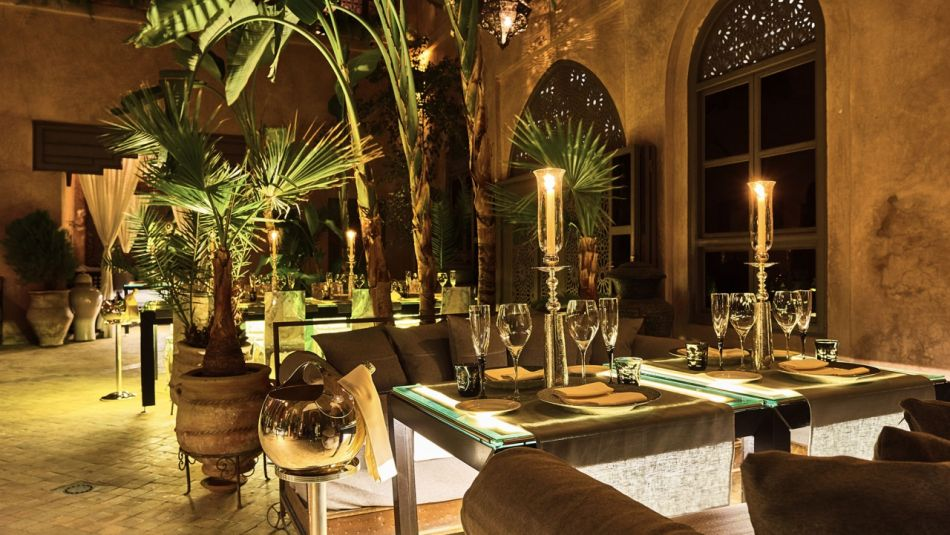
Oban by riad d'ivoire

nomad

L’Mida
.

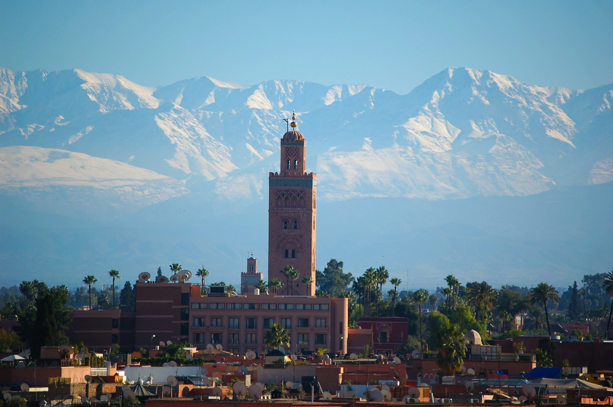
Où l'histoire almohade rencontre la magie des mille et une nuits
Fondée en 1070 par les Almoravides, Marrakech est l'une des quatre villes impériales du Maroc. Surnommée « la ville rouge » pour la teinte ocre caractéristique de ses remparts et de ses bâtiments historiques, elle a été le cœur battant et la capitale de prestigieuses dynasties comme les Almoravides, les Almohades et les Saadiens.
La médina, classée au patrimoine mondial de l'UNESCO depuis 1985, est un labyrinthe envoûtant de ruelles où se mêlent palais somptueux, mosquées monumentales et souks bourdonnants. La place Jemaa el-Fna, centre névralgique de la ville, offre chaque soir un spectacle unique de musiciens, conteurs, acrobates et échoppes culinaires odorantes.
À quelques encablures du tumulte de la vieille ville, le Jardin Majorelle — créé par le peintre français Jacques Majorelle en 1923 puis magnifiquement restauré par Yves Saint Laurent — offre une halte apaisante aux tons bleu cobalt et jaune vif. L'imposante chaîne de l'Atlas, visible par temps clair depuis les toits-terrasses de la ville, invite également à de magnifiques excursions.
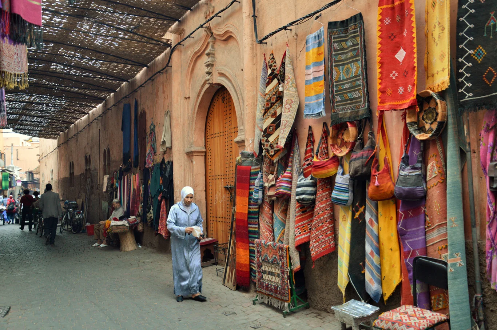
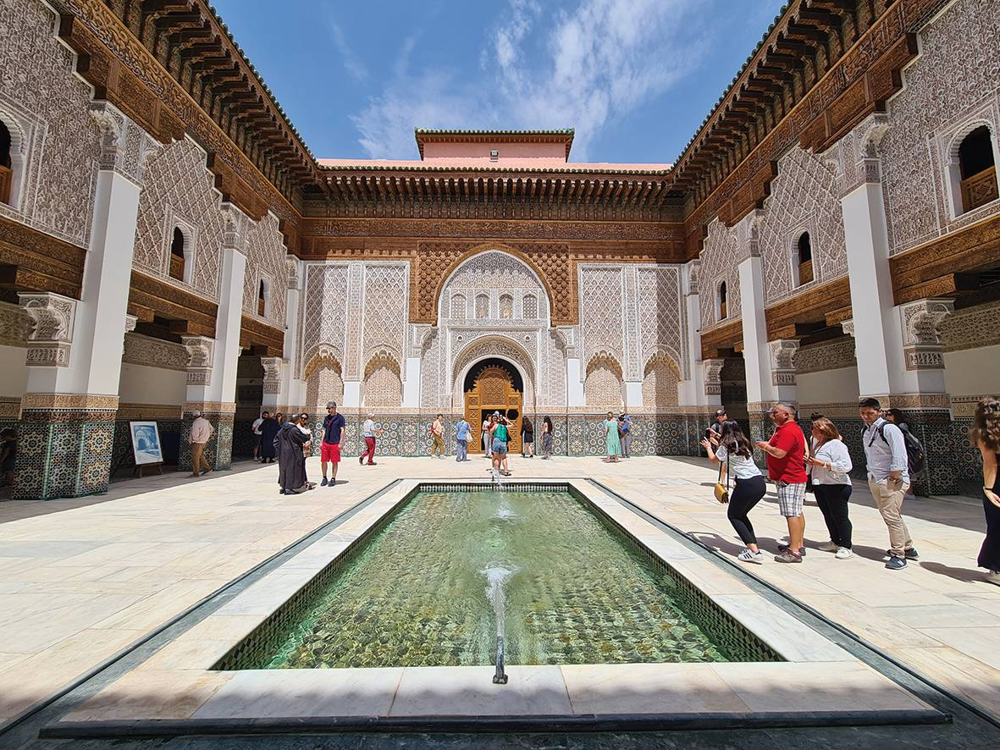
Joyau de l'architecture arabo-andalouse, cette ancienne école coranique éblouit par son grand patio orné de zelliges et de stucs finement ciselés.
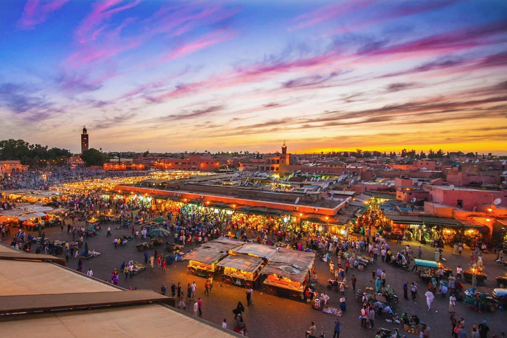
Le cœur vibrant de Marrakech, classé à l'UNESCO. Animée de jour comme de nuit, la place accueille conteurs, musiciens traditionnels et stands de cuisine locale savoureuse.
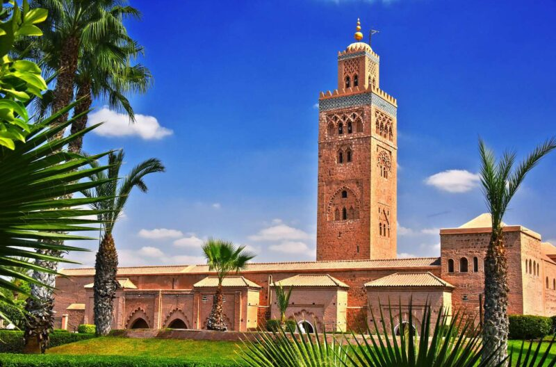
Chef-d'œuvre de l'art almohade dominant la ville de son minaret de 77 m. L'intérieur est réservé aux musulmans, mais ses jardins fleuris extérieurs sont ouverts à tous.
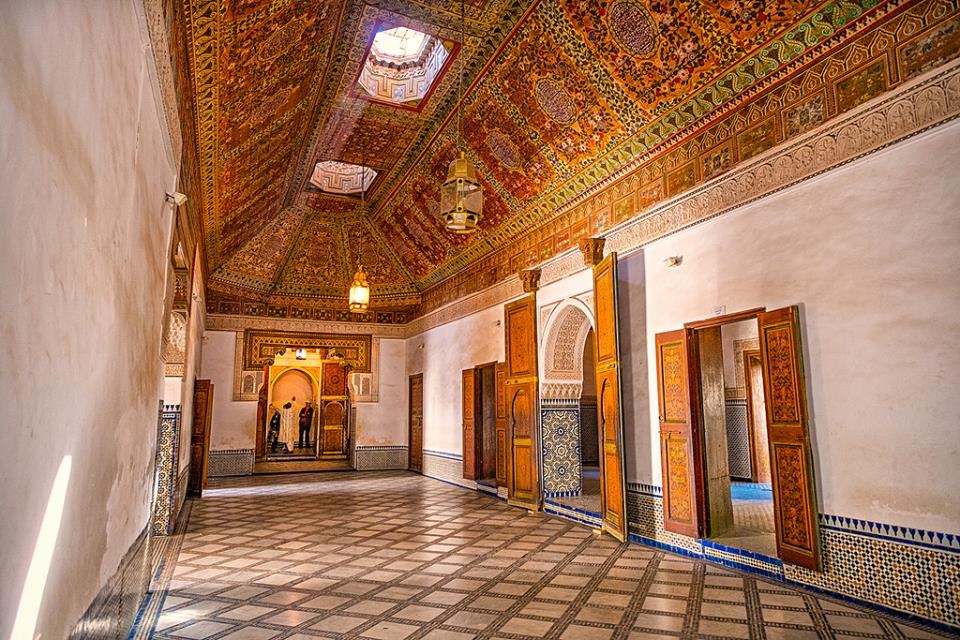
Splendide palais du XIXe siècle, chef-d'œuvre de l'art mauresque orné de zelliges colorés, de plafonds en cèdre sculpté et de grands patios verdoyants.
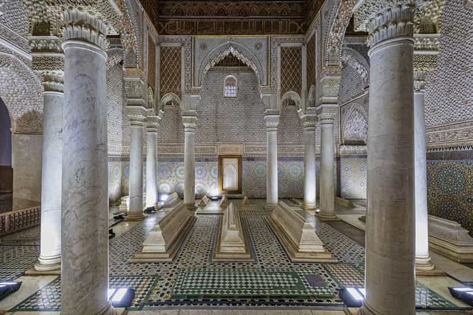
Nécropole royale du XVIe siècle, célèbre pour la finesse de sa salle des Douze Colonnes sculptée dans le marbre de Carrare et le bois de thuya.
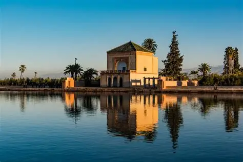
Jardin botanique mythique restauré par Yves Saint Laurent, réputé pour ses teintes bleu cobalt et sa végétation luxuriante. Il abrite également un superbe musée berbère.

.
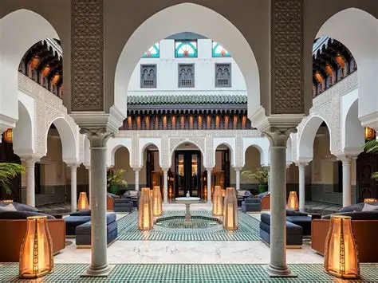
Palace légendaire mariant avec brio l'art déco et l'architecture arabo-andalouse. Ses jardins centenaires offrent un havre de paix mythique.
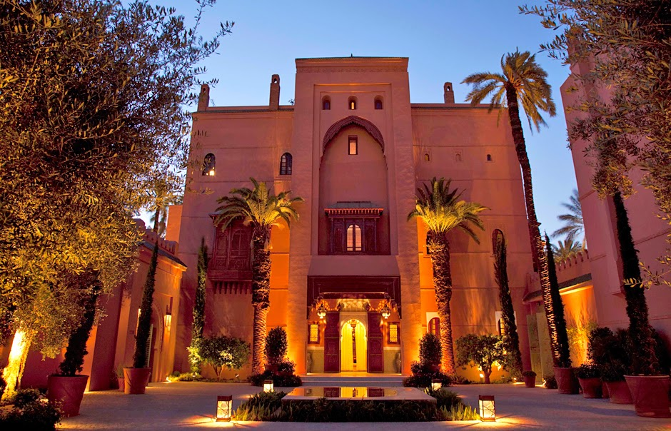
Une véritable vitrine de l'artisanat marocain, composée de somptueux riads privés d'exception et d'un spa remarquable plébiscité mondialement.
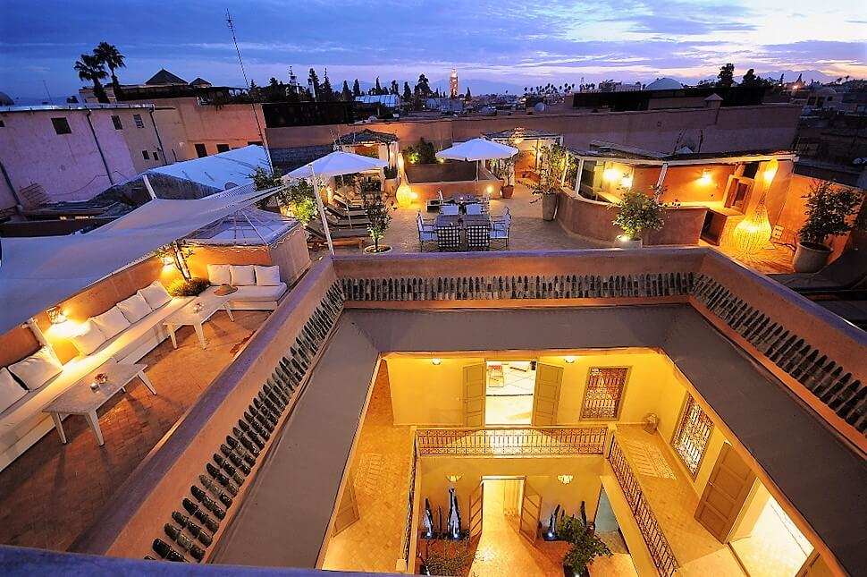
Demeure traditionnelle intimiste dotée d'un patio central verdoyant et d'un toit-terrasse panoramique idéal au coucher du soleil.
Dans les souks, la négociation fait partie intégrante du commerce local. Échangez toujours avec le sourire et beaucoup de courtoisie.
La majorité des mosquées en activité sont réservées aux fidèles musulmans. La Koutoubia s'admire ainsi principalement depuis ses superbes extérieurs.
Le cœur historique est un vaste dédale où les applications GPS perdent parfois le signal. Sollicitez poliment les commerçants établis.
Les étés sont très secs et torrides. Les nuits d'hiver (décembre à février) se révèlent fraîches, nécessitant d'emporter des lainages légers.
Les ruelles pavées de la médina exigent le port de chaussures de marche confortables à semelles plates pour parer aux dénivelés et passages étroits.
Demandez poliment l'autorisation avant de photographier les habitants, artisans et commerçants dans l'exercice de leur art quotidien.
Marrakech vous attend avec ses palais millénaires, ses souks envoûants et ses nuits étoilées sur les toits de riads. Planifiez dès maintenant votre séjour.